在半监督学习的框架下，产生的未标记样本和中的标记样本都用于估计或者根据预测。
[success]
半监督学习是指：
P(x)和P(x,y)都用于产生P(y|x)
其中：
P(x)是未标记样本
P(x,y)是标记样本
P(y|x)是根据x预测y。
在深度学习的背景下，半监督学习通常指的是学习一个表示 。 学习表示的目的是使相同类中的样本有类似的表示。 无监督学习可以为如何在表示空间聚集样本提供有用线索。 在输入空间紧密聚集的样本应该被映射到类似的表示。 在许多情况下，新空间上的线性分类器可以达到较好的泛化\citep{Belkin+Niyogi-2002,Chapelle+al-2003}。 这种方法的一个经典变种是使用主成分分析作为分类前（在投影后的数据上分类）的预处理步骤。
[success]
传统方法：
使用监督学习对P(x,y)建模。
使用无监督学习（例如PCA）对P(x)和P(x,y)对x聚类。
我们可以构建这样一个模型，其中生成模型或与判别模型共享参数，而不用分离无监督和监督部分。
[warning] 具体过程没看懂。 后面全部没看懂。
DL方法使用共享参数，而不用分离无监督和监督部分。
我们权衡监督模型准则 和无监督或生成模型准则（如或）。 生成模型准则表达了对监督学习问题解的特殊形式的先验知识\citep{LasserreJ2006}，即的结构通过某种共享参数的方式连接到。 通过控制在总准则中的生成准则，我们可以获得比纯生成或纯判别训练准则更好的权衡\citep{LasserreJ2006,Larochelle+Bengio-2008-small}。
\cite{Russ+Geoff-nips-2007}描述了一种学习回归核机器中核函数的方法，其中建模时使用的未标记样本大大提高了的效果。
更多半监督学习的信息，请参阅\cite{Chapelle-2006}。
李宏毅补充：
监督学习的数据是labelled data。
半监督学习的数据是：一组labelled data + 一组unlabelled data，且后者数量远大于前者
- transductive learning： unlabelled data是测试数据
- inductive learning： unlabelled data不是测试数据
为什么有半监督学习？： - unlabelled data比labelled data便宜。
- 半监督学习符合人类学习过程
半监督学习通道包含人对数据的假设，基于不同的假设会衍生不同的学习方法。学习结果的好坏与“假设是否符合事实”相关。
1. 半监督生成模型
1.1. 监督学习生成模型
先回顾一个监督学习中的生成模型
假设有这样一组二分类的labelled data。
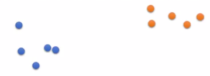
- 计算先验估计
- 假设条件函数，代表高斯分布
- 计算，例如本例中得出这样的分布：
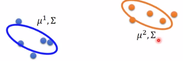 - 评估新数据属于Ci的概率：
1.2. 半监督学习生成模型
将由监督学习生成的模型参数定义为
此时又来了一组unlabelled data，用表示。原来的labelled data则用表示。
基于unlabelled data校正模型。
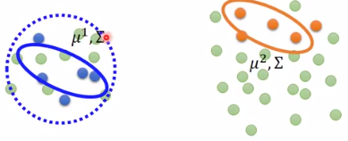
- 根据参数，评估每个unlabelled data属于每个类别的概率
- 更新模型参数
公式说明：
（1）：第一项为labelled data的真实概率。第二项为unlabelled data的期望概率。
（2）：[?]这个公式很奇怪
- goto 1，直至收敛。
这是一种EM算法，E是第1步，代表Expectation。M是第2步，代表Maximization。
算法过程跟KMeans有点像，区别是初始不是随机值，而是labelled data生成的值。
2. 假设一：Low-density Separation 非黑即白
假设数据是可以分开的，即交界处没有数据（low-density）。
2.1. 算法一：self-training
- 基于labelled data得到模型f*。
- 用f*对unlabelled data做标记。
- 把一部分置信度比较高的unlabelled data转成labelled data。
缺点：只能用于分类问题，不能用于回归问题。因为第2步算出来的label不会导致f*的更新。
self-training VS generative model:
hard label：在self-training算法中，unlabelled data的label一但确定了，就不会再修改。
soft label：在generative model算法中，unlabelled data的label一直在调整。
上面的第1步“基于labelled data得到模型f*”可以使用NN来做。，此时必须用hard label。
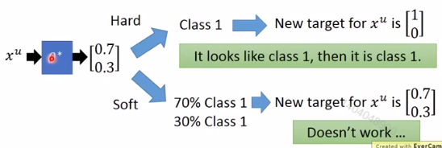
2.2. 算法二：Entropy-based Regularization
原理：输入为单个unlabelled data，经过参数为的模型，得到输出为这个data属于哪个分类的概率分布。关键于在怎么判断的好坏，并依此来制定代价函数。
Entropy-based Regularization认为：
好：分布集中于某一个类别（低熵）。
坏：分布平均分布在各种类别上（高熵）。
依此制定的低价函数为：
公式说明：
L的第一项表示：对每个labelled data，期望它的预测值和真实值的差距越小越好。为labelled data。C为监督学习分类问题的代价函数，常用的CrossEntropy。
L的第二项表示：对每个unlabelled data，期望它的预测结果越确定越好。结果的确定性用熵公式E来表示。
E用于计算一个分布的熵，m为类别。为属于类别m的概率。
2.3. 算法三：半监督SVM
原理：
找到一个提供最大margin和最小error的边界
- 穷举unlabell data所有可能的label组合。
- 对每个结果做一个SVM
- 找到margin最大且error最小的版本
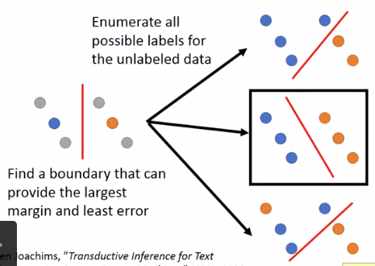
3. 假设二：Smoothness Assumption 近朱者赤，近墨者黑
假设：
- x的分布是不平均的
- x1、x2在high density region很接近，或者说，x1和x2 connected by a high density path，则y1=y2。
例如：
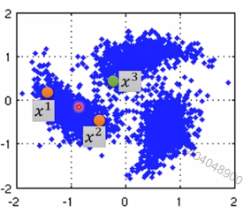
x2和x3更接近，但它们之间没有high density path。
x1和x2之间有high density path，因此认为y1=y2。
真实例子：
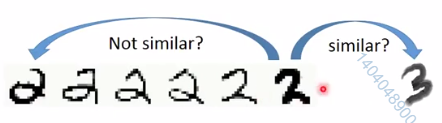
3.1. 算法一：Clustering
- 对数据做cluster
- 每个cluster的data分作一类（数据量大才有用）
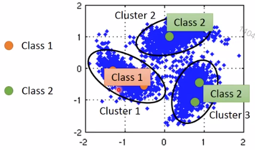
3.2. 算法二：Graph-based Approach
- 找数据关系
例如利用网页间的超链接来描述网页间的关系
利用论文间的引用关系来描述论文
或者自己定义xi、xj之间的相似度。
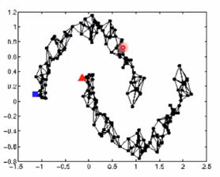 - 建边
例如KNN、e-Neighbour
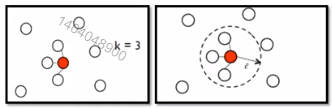 定义边的权重
例如高斯径向基函数：给unlabelled data分类
分类依据：labelled data通过Edge的weight影响附近unlabelled data的分类。
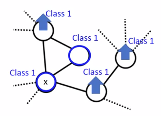- 通过对分类结果的评价（代价函数）调整NN有参数
根据算法的假设前提，认为分类结果越smooth说明算法越好。
定义smoothness:
公式解释：
（1）：计算Smoothness，值越小越好。代表遍历所有的数据对，包含labelled data和unlabelled data。如果x1、x2之间的权重大，则希望y1、y2尽量地接近。如果x1、x2之间的权重小，则y1、y2之间的关系不重要。
（2）：公式（1）的进一步推导。（3）、（4）是对（2）的补充。
（4）：L不是lost function，而是Graph Laplacian矩阵。D是一个对角矩阵，且
（5）：代价函数。第一项用于labelled data，与上文中的[Entropy-based Regularization]相同。第二项用于判断整体数据的smoothness。
Note:
在NN模型中，S的计算不一定要放在lost function上，也可以放在NN的任意一层。
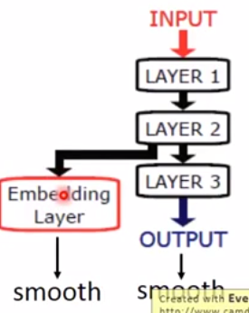